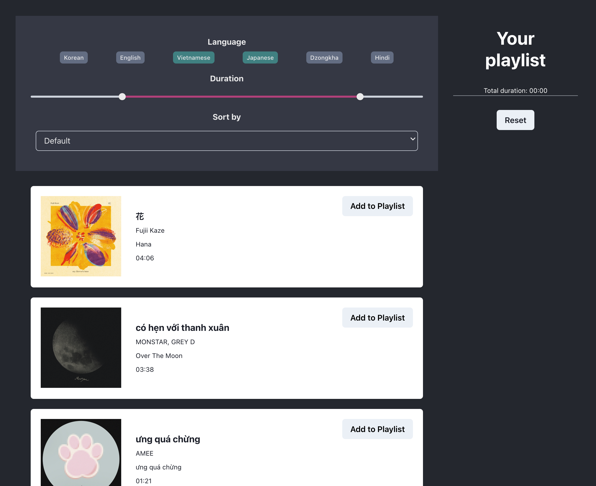
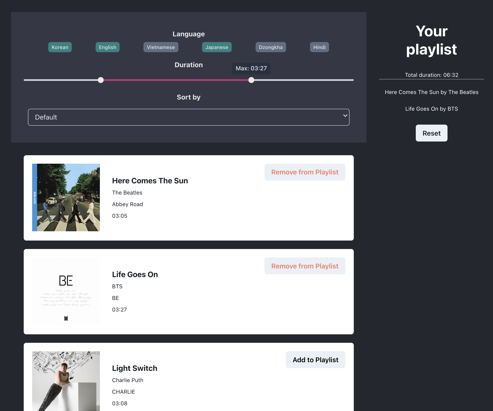

The purpose of this assignment is to practice using React to create a basic app with a filtering, aggregating, and sorting function.
For my app, I decided to create a music playlist maker. I listen to music from a lot of different genres, so I created a filter for selecting songs of a particular language to add to the playlist. I also added a slider filter for song duration, which can be helpful for identifying short vs. long songs. Finally, I added a sorting functionality for duration, to order songs from shortest to longest. When adding songs to the playlist, the total length of the playlist is also shown.
 Building the app taught me the fundamentals of UI components. I used Chakra UI as a component library for this project, and I found it interesting how having a component library allows for a lot of flexibility without having to write a lot of CSS. One of the challenges for me was keeping track of several useState hooks. For example, when adding a song to the playlist, not only is the list of songs shown on the right modified, but also the total duration count must be changed and the song card button's text going from "Add to Playlist" to "Remove from Playlist". This exercise made me realize how multiple aspects of the UI can rely on the same state object.
If I had more time, I would work on making my app more compatible for different devices. It took a lot of time creating the layout I wanted to the app and setting up all the functionality.